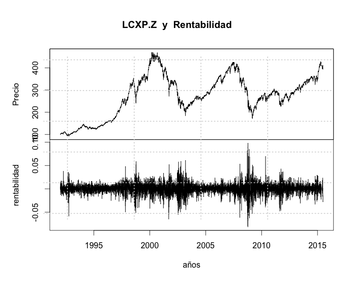
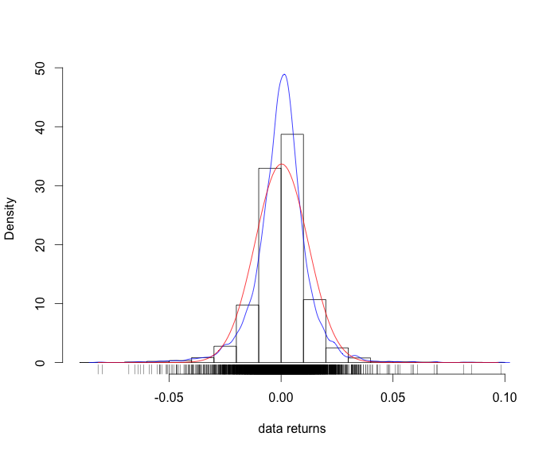
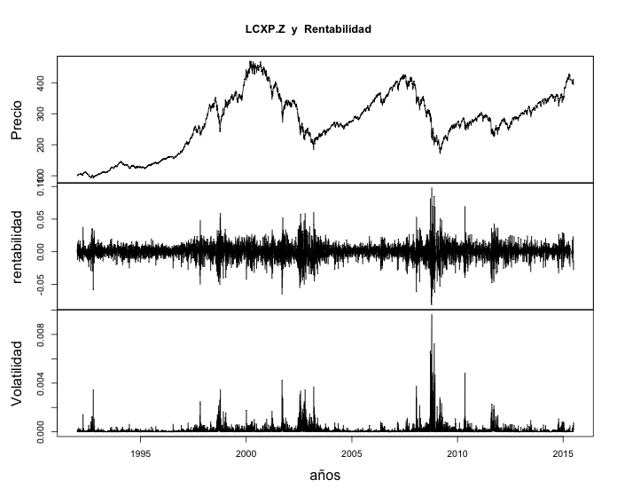
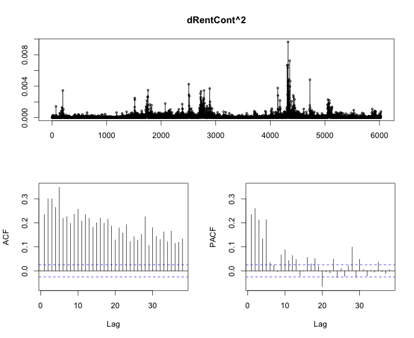
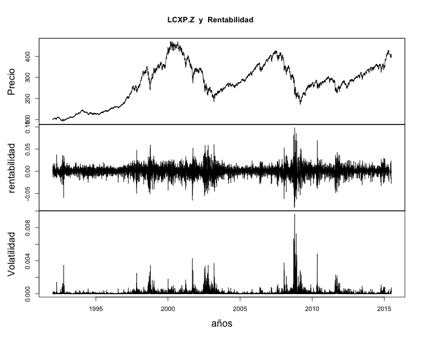
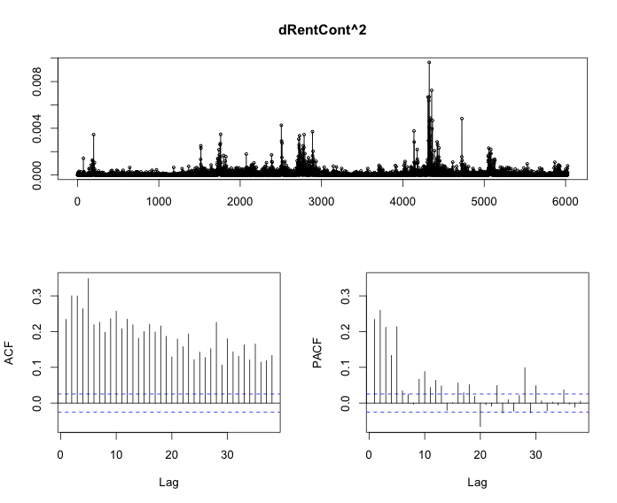
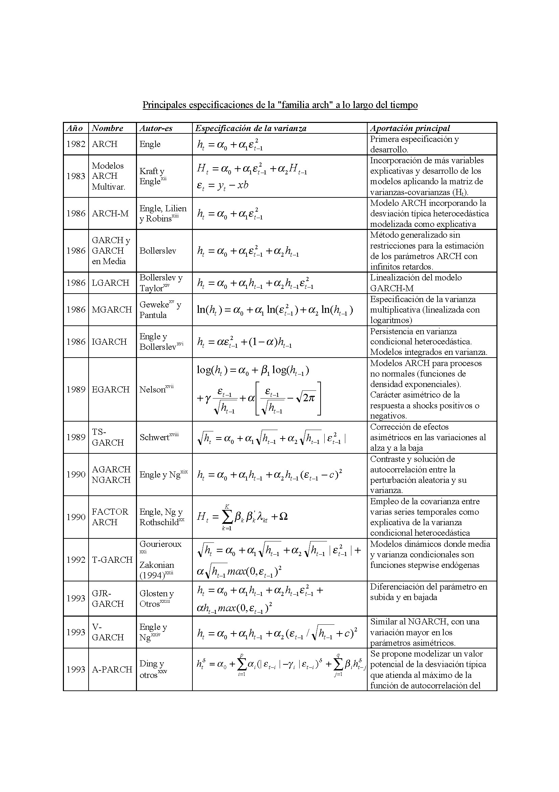

Modelos Series Temporales III
MSDF: Clase 07 (Sesión 13 y 14)
1 Modelos GARCH
1.1 Bibliografía
An introduction to analysis of financial data with R.
Ruey S. Tsay.
WILEY 2013 (Tema 5)Analysis of Financial Time Series. Third Edition
RUEY S. TSAY
WILEY (2010)
Capítulos: 3 y 9Mastering R for Quantitative Finance.
Packt Publishing. 2015.
(Tema 1)Engle y Patton (2001): “What good is a volatility model?” Quantitative Finance.
1.2 Introducción
Las series temporales de rentabilidad de activos financieros poseen unas regularidades empíricas que se conocen en la literatura especializada como hechos estilizados:
Camino Aleatorio.
Colas pesadas (anchas)
Normalidad agregada
Volatilidad no constante y agrupada (volatility cluster)


 



1.3 Volatilidad: Hechos Característicos1
Considerando una serie temporal de rendimientos \(r_t\) con \(t=1,2,3, \dots,T\).
La varianza muestral de los rendimientos es :
\[ \sigma_{r_t}^2= \frac{1}{T-1} \sum_{t=1}^T(r_t-\bar{r})^2 \]
donde \(\bar{r}=\frac{1}{T}\sum_{t=1}{T}r_t\) es la media muestral.
Este estadístico muestral (la varianza) se calcula con toda la muestra. Si se calcula la varianza con la primera mitad de la muestra y se compara con la varianza de la segunda mitad seguramente serán diferentes.
Esto es, la varianza y su raíz cuadrada (desviación típica o volatilidad) son cambiantes en el tiempo (No son constantes).
De una manera intuitiva, la volatilidad es una medida de cuánto la rentabilidad fluctúa alrededor de su media.
Es una medida del riesgo.
Por lo tanto, es importante, poder calcular esta volatilidad en cualquier instante, para analizar cómo varía con el tiempo y para predecir sus valores futuros.
Más formalmente, sea \(r_t=\mu+\epsilon_t\) una serie temporal de los rendimientos, donde \(\mu\) es la rentabilidad media o esperada y \(\epsilon_t\) es el error que se expresa como: \[ \epsilon_t=\sigma_t \cdot z_t \]
donde \(z_t\) un ruido blanco gaussiano de media cero y \(\sigma_t\) es una volatilidad cambiante en el tiempo que definimos como heterocesdasticidad condicional. De tal forma, que la volatilidad futura se puede predecir basándose en su volatilidad pasada y otras variables condicionantes.
Con el fin de realizar el análisis de la volatilidad, es necesario especificar esta dependencia, para lo que se utilizan los modelos del tipo de Heteroscedasticidad condicional autorregresiva generalizada (GARCH).
Algunos fenómenos se observan sistemáticamente en casi todas las series temporales de rentabilidad. Un buen modelo de heteroscedasticidad condicional debe ser capaz de captar la mayoría de estos hechos.
Los hechos estilizados más conocidos en el análisis de la volatilidad son:
Los clusters de volatilidad: La volatilidad es más probable que sea alta en el momento t si también fue alta en el momento t-1. Es decir, un shock en el momento t-1 aumenta no sólo la varianza en el tiempo t-1, sino también la varianza en el tiempo t. Así, los mercados son más volátiles en algunos períodos, y son más tranquilo que en otros. Las volatilidades están agrupados en el tiempo. Los modelos de tipo GARCH capturar este efecto. De hecho, estos modelos son precisamente una forma de especificar cómo la volatilidad en el tiempo t depende de la volatilidad pasada (y posiblemente otras variables condicionales).
Colas gruesas (anchas): Las rentabilidades generalmente presentar colas gruesas, también conocido como el exceso de curtosis o leptokurtosis. Es decir, su curtosis es generalmente mayor que tres, recordar que ese es el valor de la curtosis de una variable aleatoria gaussiana o normal. Para comprobar este comportamiento se puede realizar un contraste Jarque-Bera, para verificar de forma conjunta tanto si la distribución es simétrica y si la distribución presenta curtosis igual a tres y es normal.
Si los rendimientos son de cola ancha, la probabilidad de tener eventos extremos (rendimientos muy altos o muy bajos) es más alta de lo que sería en el caso normal.
Asimetría: Hay un hecho estilizado que el modelo GARCH normal no es capaz de capturar, que es el hecho observado empíricamente que los shocks negativos en el momento t-1 tienen un mayor impacto en la variación en el tiempo t que los shocks positivos. Sin embargo, el modelo GARCH puede ser fácilmente modificado para capturar esta asimetría. Ejemplos de estas generalizaciones son los GARCH Umbral (TGARCH), el asimétrico GARCH (AGARCH) y la exponencial GARCH (EGARCH).
Esta asimetría se llama efecto de influencia/apalancamiento (leverage) debido a que el aumento del riesgo proviene de la creciente influencia generada por un shock negativo.
1.4 Modelos GARCH
Para construir un modelo de volatilidad para los rendimientos de un activo debemos tener en cuenta cuatro etapas:
- Especificar un modelo para la media, si es necesario estimar un modelo ARIMA para modelizar la dependencia lineal, de tal forma que el termino de error sea ruido blanco (media cero y sin autocorrelación):
\[ \text{ECUACIÓN DE LA MEDIA}\\ r_t=\mu+\epsilon_t \equiv \text{Modelo con Constante} \\ r_t=\mu+ARIMA(p,d,q)+\epsilon_t \equiv \text{Modelo con ARIMA} \]
Usar los residuos de la ecuación de la media para verificar efectos ARCH.
Especificar un modelo GARCH y estimar conjunto el modelo de la media y de la volatilidad.
Verificar que el modelo ajustado y reestimar si es necesario.
1.4.1 Definición Modelo GARCH
Sea \(r_t=\mu+\epsilon_t\) una serie temporal de los rendimientos, donde \(\mu\) es la rentabilidad media o esperada y \(\epsilon_t\) es el error que se expresa como: \[ \epsilon_t=\sigma_t \cdot z_t \]
donde \(z_t\) un ruido blanco gaussiano de media cero y se dice que \(\epsilon_t \sim GARCH(p,q)\) si:
\[ \sigma_t^2=\omega+\alpha_1\epsilon_{t-1}^2+\dots+\alpha_p\epsilon_{t-p}^2+\beta_1\sigma_{t-1}^2+\dots+\beta_q\sigma_{t-q}^2 \]
Los modelos se pueden seleccionar utilizando un criterio de información (AIC, BIC o SIC).
Como caso particular se encuentran:
\[ \text{ARCH(p)}\\ \sigma_t^2=\omega+\alpha_1\epsilon_{t-1}^2+\dots+\alpha_p\epsilon_{t-p}^2\\ \\ \text{GARCH(1,1)}\\ \sigma_t^2=\omega+\alpha_1\epsilon_{t-1}^2+\alpha_p\epsilon_{t-p}^2+\beta_1\sigma_{t-1}^2 \]
El GARCH(1,1) es el modelo mas utilizado, en realidad es un ARMA(1,1) sobre la varianza de los errores.
En este modelo se debe cumplir que \(\alpha_1+\beta_1<1\), caracterizándose la volatilidad por revertir a la media, fluctuando alrededor la raíz de la varianza incondicional: \[ \sigma^2\equiv Var(r_t)=\frac{\omega}{1-\alpha_1-\beta_1} \]
Además, debe cumplirse que \(\omega,\alpha_1,\beta_1>0\).
En cuanto a la predicción de la varianza horizonte h será:
\[ \hat \sigma _{T + h}^2 = \hat \omega + \left( {\hat{\alpha _1} + \hat {\beta _1}} \right)\hat \sigma _{T + h - 1}^2 \]
En cuanto a la volatilidad compuesta será:
\[ {\hat \sigma _{T + 1:T + h}} = \sqrt {\sum\limits_{i = 1}^h {\hat \sigma _{T + i}^2} } \to \sqrt h \sqrt {\frac{{\hat \omega }}{{1 - {{\hat \alpha }_1} - {{\hat \beta }_1}}}} \] Otros modelos son:

1.5 Identificación y Diagnosis
Las herramientas para la identificación y diagnosis del modelo GARCH son:
Gráfico de los rendimientos al cuadrado o valor absoluto.
ACF y PACF de los rendimientos al cuadrado o valor absoluto.
Test Ljung-Box de los rendimientos al cuadrado o valor absoluto.
Test de Multiplicadores de Langrage de Engle (LM), donde la hipótesis nula es de no GARCH.
\[ \begin{gathered} \,\varepsilon _t^2 = {\alpha _0} + {\alpha _1}\varepsilon _{t - 1}^2 + \cdots + {\alpha _m}\varepsilon _{t - m}^2 + error \hfill \\ {H_0}:\,{\alpha _0} = {\alpha _1} = \cdots = {\alpha _m} = 0 \hfill \\ {H_1}:{\alpha _i} \ne 0 \hfill \\ \end{gathered} \]
1.6 Ejemplo: IBM
# Volatility
#Stylized facts and GARCH models
#(c)Ricardo A. Queralt
# References:
# Tsay(2013)
#
library("quantmod") #Package to download financials historical data
library(forecast)
library("fGarch")
#funciones
archTest <- function(rtn,m=10){
# Perform Lagrange Multiplier Test for ARCH effect of a time series
# rtn: time series
# m: selected AR order
# TSAY(2013)
y=(rtn-mean(rtn))^2
T=length(rtn)
atsq=y[(m+1):T]
x=matrix(0,(T-m),m)
for (i in 1:m){
x[,i]=y[(m+1-i):(T-i)]
}
md=lm(atsq~x)
summary(md)
}
###FIN FUNCIONES
#Yahoo ticker (stock or index)
sSymbol="IBM"
#get data from yahoo
mData<-getSymbols(sSymbol ,from="1990-01-01",to="2016-09-30",auto.assign=FALSE)
#Define workdata
xData=Ad(mData)
#Calculate Daily Arithmetic Return
dRentCont=dailyReturn(xData,type='log',leading=FALSE)
#Exclude NA (First data)
dRentCont=na.exclude(dRentCont)
plot.zoo(cbind(xData,dRentCont),main=paste(sSymbol," y Rentabilidad"),xlab="años",ylab=c("Precio","rentabilidad"))
grid(lwd=2)
#Volatilidad GARCH
#Plot return squared
plot.zoo(cbind(Ad(mData),dRentCont,dRentCont^2),main=paste(sSymbol," y Rentabilidad"),xlab="años",ylab=c("Precio","rentabilidad","Volatilidad"))
#testing mean
t.test(dRentCont)
#ACF & PACF
# VolProxy=abs(dRentCont) # absolute value
VolProxy=dRentCont^2 #squared
#ACF y PACF
tsdisplay(VolProxy)
#Ljung-Box Test
Box.test(VolProxy,lag=10, type="Lj")
Box.test(VolProxy,lag=20, type="Lj")
Box.test(VolProxy,lag=40, type="Lj")
#LM test
archTest(dRentCont,20)
#ARCH(1)
m1=garchFit(~1+garch(1,0),data=dRentCont,trace=F) # Fit an ARCH(1) model
summary(m1)
resi=residuals(m1,standardize=T) #residuals
resi=xts(resi,order.by=index(dRentCont)) #residuals as xts
tsdisplay(resi^2) #acf pacf residuals
#GARCH(1,1)
m2=garchFit(~1+garch(1,1),data=dRentCont,trace=F) # Fit an GARCH(1,1) model
summary(m2)
resi=residuals(m2,standardize=T) #residuals
resi=xts(resi,order.by=index(dRentCont)) #residuals as xts
tsdisplay(resi^2) #acf pacf residuals
plot(m2)
#t-student
m3=garchFit(~1+garch(1,1),data=dRentCont,trace=F,cond.dist="std")
summary(m3)
plot(m3)
v1=volatility(m3) # Obtain volatility
v1=xts(v1,order.by=index(dRentCont)) # volatility as XTS
plot(sqrt(252)*v1)
resi=residuals(m3,standardize=T) # Standardized residuals
resi=xts(resi,order.by=index(dRentCont)) # Standardized residuals as XTS
tsdisplay(resi^2) #acf pacf residuals
plot(resi)
predict(m3) #forecast volatility
predict(m3, n.ahead = 10, plot=TRUE, crit_val=2) #plot with 2*standard error
predict(m3,n.ahead=20,plot=TRUE,conf=.9,nx=100) # plot 100 data with 90% confidence